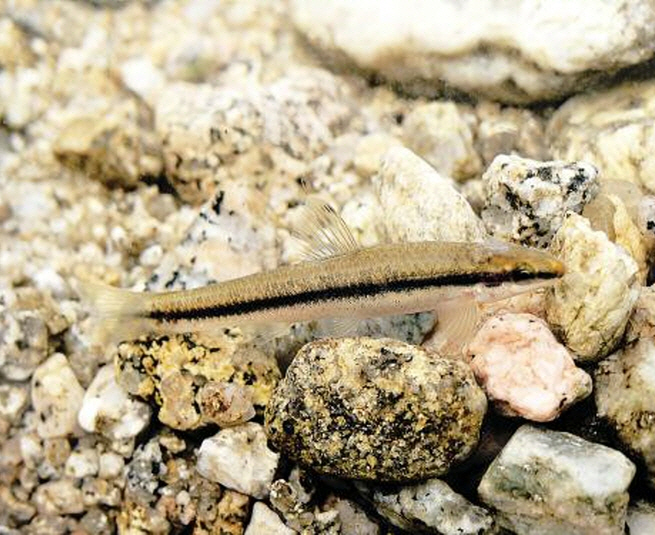

가는돌고기

주요특징 및 설명
- 종명: 가는돌고기
- 학명: Pseudopungtungia tenuicorpa
- 생물학적 분류: 잉어과
- 분포: 한국 고유종(한강, 임진강)
- 등급: 멸종위기종 Ⅱ급
- 높이: 40~60cm
- 주요 특징
가는돌고기는 하천 상류나 중상류의 물이 맑고 암반과
큰 돌이 깔려 있는 소나 약한 여울에 서식한다.
먹이는 수서곤충을 주로 먹는다.
산란기는 5~6월이며, 소규모의 무리를 지어 큰 돌의
밑면이나 암반의 틈새 등에 산란한다.